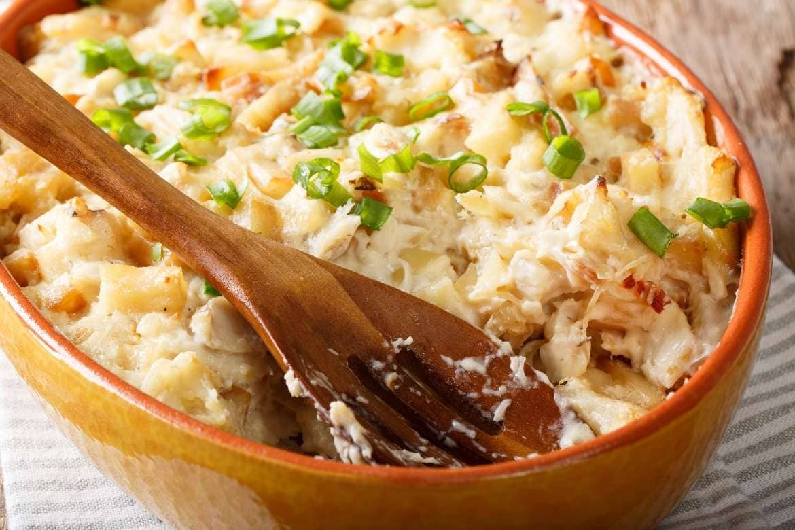

Cod With Cream

Description
Cod with cream (Bacalhau com Natas in portuguese) is one of them, stamped in Portuguese houses and taverns around the country.
The dish is nothing more than a gratin made with chips of cod, onion and chips of potato covered with bechamel sauce and cream.
It is super creamy and yields a lot, great for family lunch.
Ingredients
Serves 4
- 400g Shredded cod - soaked for 6 hours, changing the water regularly.
- 400g Potatoes – peeled and diced
- Olive Oil
- 2Medium onions - diced
- 3Garlic cloves - minced
- 1Bay leaf
- 1 tbspButter
- 1 tbspFlour
- 300mlMilk
- 200mlFresh Cream
- Fresh parsley
- Nutmeg, salt and black pepper
- 100gMozzarella cheese
- 50gParmesan cheese
Steps
- Rinse and drain the soaked cod, place it in a medium pot, and cover it with hot water.
Place it over a medium heat, bring it to a boil, and let it simmer for 5 minutes.
- Drain the fish, saving 1 cup of the water.
- In another medium-size pot, combine the butter, flour, and a drizzle of olive oil. Place It over low to medium heat.
After the butter has melted, cook the mixture for around 2 minutes, constantly stirring.
- Add the milk and fish water, continue stirring until thickened. We want a bechamel consistency.
- Stir in the fresh cream, season it with nutmeg, salt and black pepper.
- Place a frying pan over medium heat, add a tbsp of olive oil, the onions and garlic. Fry them till the onions are translucent.
Add the fish and fry for another 5 minutes. Transfer it to a mixing bowl.
- Cover the bottom of the same frying pan with olive oil. Fry the potatoes in batches, till golden brown.
Rest it on some absorbent towels to drain any excessive oil.
- Preheat the oven to 200 Celsius.
- Combine the fish sauce, the potatoes, and the fish. Place it on a baking dish, sprinkle the cheese on top.
- Place it in the oven and roast it for 20 minutes or until the cheese is golden brown.
- Serve sprinkled with some fresh parsley.